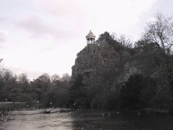

Buttes-Chaumont Park
Rue Manin and Rue Botzaris, 19e


Image courtesy of Tiseb, 2005. Some rights reserved.
“a seedy . . . oasis in a popular neighborhood.”
Many of the aspects of Buttes-Chaumont described by Louis Aragon in his 1927 book Paris Peasant, such as the bronze column and obelisk, no longer exist. Not to mention, the park is closed at night. Because it was largely ignored by the bourgeois, Aragon called the park a “seedy” “oasis in a popular neighborhood.”

Buttes Chaumont